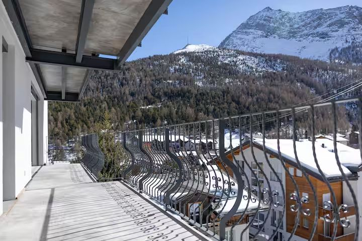

Saas-Fee, la Perle des Alpes
Un village sans voitures à 1800 mètres, cerné de treize quatre-mille, sous un glacier que l'on skie en juillet aussi naturellement qu'en janvier.
Le village
Ce qu'un village sans voitures change réellement
Les visiteurs laissent leur véhicule dans les parkings de l'entrée et continuent à pied. Les rares véhicules qui circulent dans le village sont de petits engins électriques : taxis, chariots de livraison, un véhicule technique de temps à autre.
L'effet est immédiat et difficile à exagérer. Pas de bruit de circulation, pas de gaz d'échappement, pas de bord de route dont il faut écarter les enfants. Les groupes se dispersent et se retrouvent sans que personne ne compte les têtes devant une chaussée. La plupart des stations alpines ont cessé d'être ainsi il y a des décennies. Saas-Fee, jamais.
Cela change aussi ce que vaut le mot « central ». Comme tout se fait à pied, un appartement au milieu du village, comme celui-ci, n'est pas un confort marginal. C'est la différence entre des vacances avec logistique et des vacances sans.

Hiver
Un glacier au-dessus du village, un funiculaire dans la montagne

Le domaine s'élève depuis le village jusqu'au glacier de l'Allalin. Le Metro Alpin, un funiculaire souterrain qui monte à l'intérieur de la montagne, dépose les skieurs à Mittelallalin, vers 3500 mètres, là où la neige tient toute l'année.
Cette altitude explique la fiabilité de Saas-Fee en début et en fin de saison, quand les domaines plus bas scrutent les prévisions. Le terrain est large et ouvert en haut, puis se resserre dans les mélèzes au retour.
Les pistes sont à quatre minutes à pied de la porte de l'appartement, à travers le village.
Été
Ski avant midi. Marche après.
Saas-Fee fait partie de la poignée d'endroits des Alpes où le glacier se skie tout l'été, ce qui explique que des équipes nationales y campent en juillet et en août. Le Metro Alpin continue de circuler : vous êtes sur la neige avant midi sans un mètre de dénivelé à pied.
Sous la glace commence le pays de la marche : sentiers d'altitude entre mélèzes et rochers, alpages, et tout le fer à cheval de sommets en vue. Journées longues, nuits fraîches, et le village dans sa version la plus détendue et, accessoirement, la moins chère.

Soirées
Dîner, dans un sens ou dans l'autre
Les restaurants se trouvent sur la rue principale et autour, tous à distance de marche de l'appartement. Comme rien n'est à plus de quelques minutes, sortir dîner ne demande jamais d'organisation. On descend, on mange, on remonte, et personne ne doit rester sobre pour conduire.
Manger chez soi est l'autre moitié de l'argument en faveur d'un appartement. Un groupe de huit à l'hôtel paie huit couverts au tarif de l'hôtel tous les soirs. Ici, la cuisine et la table encaissent tout le groupe, le supermarché est à vingt mètres, et l'on cuisine quand on en a envie.
Accès
L'arrivée
En train
Jusqu'à Viège, sur la ligne principale de la vallée du Rhône, puis le car postal jusqu'au fond de la vallée de Saas, environ une heure. L'arrêt est à l'entrée du village, à quelques minutes à pied de l'appartement.
En voiture
Depuis Viège, on remonte la vallée jusqu'aux parkings de l'entrée du village. On n'entre pas en voiture dans Saas-Fee ; personne ne le fait. Les pneus d'hiver sont le minimum raisonnable dès novembre.
En avion
Genève et Zurich sont toutes deux réalistes, à environ trois heures à trois heures et demie en train et en car. Milan Malpensa est une option en été, par le Simplon.
Les indications d'arrivée précises et la remise des clés viennent de la régie locale une fois vos dates confirmées. Modalités de réservation.